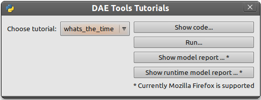
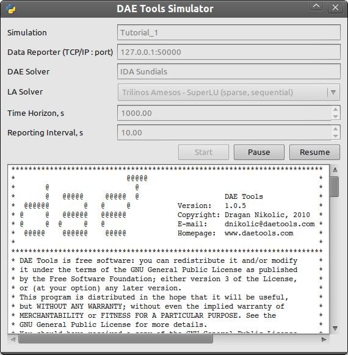
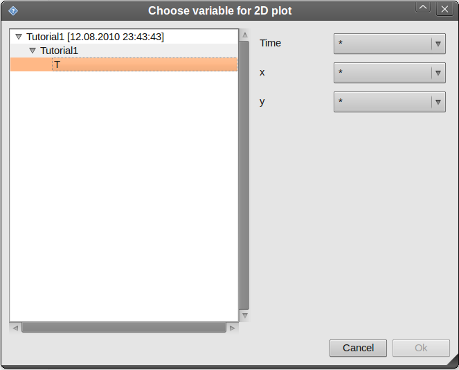
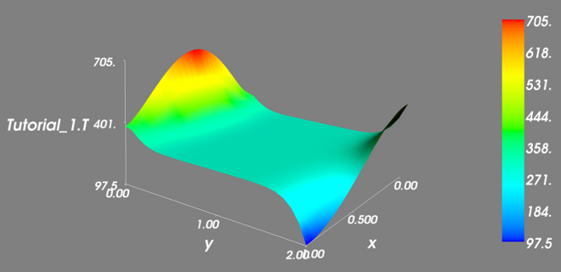

Getting Started
This chapter gives the basic information about what is needed to develop a model of a process, how to simulate /optimize it and how to obtain and plot the results of a process simulation/optimization. In general, the simulation/optimization of a process consists of three tasks:
- Modelling of a proces
- Defining a simulation/optimization
- Processing the results
Programming language
DAE Tools core libraries are written in standard c++. However, Python programming language is used as the main modelling language. The main reason for use of Python is (as the authors say): "Python is an easy to learn, powerful programming language. It has efficient high-level data structures and a simple but effective approach to object-oriented programming. Python’s elegant syntax and dynamic typing, together with its interpreted nature, make it an ideal language for scripting and rapid application development in many areas on most platforms" [*]. And: "Often, programmers fall in love with Python because of the increased productivity it provides. Since there is no compilation step, the edit-test-debug cycle is incredibly fast" [*]. Also, please have a look on a comparison to the other languages. Based on the information available online, and according to the personal experience, the python programs are much shorter and take an order of magnitude less time to develop it. Initially I developed daePlotter module in c++; it took me about one month of part time coding. But, then I moved to python: reimplementing it in PyQt took me just two days (with several new features added), while the code size shrank from 24 cpp modules to four python modules only! "Where Python code is typically 3-5 times shorter than equivalent Java code, it is often 5-10 times shorter than equivalent C++ code! Anecdotal evidence suggests that one Python programmer can finish in two months what two C++ programmers can't complete in a year. Python shines as a glue language, used to combine components written in C++" [*]. Obviously, not everything can be developed in python; for complex projects I still prefer the heavy c++ artillery.
The main concepts
To efficiently model a real world user should be familiar with the following concepts:
- Model
A model of the process is a simplified abstraction of real world process/phenomena describing its most important/driving elements and their interactions. In DAE Tools models are created by defining their parameters, distribution domains, variables, equations, and ports. - Distribution domain
Domain is a general term used to define an array of different objects (parameters, variables, equations but models and ports as well).
- Parameter
Parameter can be defined as a time invariant quantity that will not change during a simulation.
- Variable
Variable can be defined as a time variant quantity, also called a state variable.
- Equation
Equation can be defined as an expression used to calculate a variable value, which can be created by performing basic mathematical operations (+, -, *, /) and functions (such as sin, cos, tan, sqrt, log, ln, exp, pow, abs etc) on parameter and variable values (and time and partial derivatives as well).
- State transition network
State transition networks are used to model a special type of equations: discontinuous equations. Discontinuous equations are equations that take different forms subject to certain conditions. They are composed of a finite number of states.
- State
States can be defined as a set of actions (in our case a set of equations) under current operating conditions. In addition, every state contains a set of state transitions which describe conditions when the state changes occur.
- State Transition
State transition can be defined as a transition from the current to some other state, subject to given conditions.
- Port
Ports are objects used to connect two models. Like models, they may contain domains, parameters and variables.
- Simulation
Simulation of a process can be considered as the model run for certain input conditions. To define a simulation, several tasks are necessary such as: specifying information about domains and parameters, fixing the degrees of freedom by assigning values to certain variables, setting the initial conditions and many other (setting the initial guesses, absolute tolerances, etc). - Optimization
Process optimization can be considered as a process adjustment so as to minimize or maximize a specified goal while satisfying imposed set of constraints. The most common goals are minimizing cost, maximizing throughput, and/or efficiency. In general there are three types of parameters that can be adjusted to affect optimal performance:
- Equipment optimization
- Operating procedures
- Control optimization
- Solver
Solver is a set of mathematical procedures/algorithms necessary to solve a given set of equations. There are several types of solvers: Linear Algebraic solvers (LA), used to solve linear systems of equations; Nonlinear Algebraic solvers (NLA), used to solve non-linear systems of equations; Differential Algebraic solvers (DAE), used to solve mixed systems of differential and algebraic equations; Nonlinear Programming solvers (NLP), used to solve nonlinear optimization problems; Mixed-integer Nonlinear Programming solvers (MINLP), used to solve mixed-integer nonlinear optimization problems. In DAE Tools it is possible to choose DAE (currently only Sundials IDAS), NLP/MINLP (currently only IPOPT/BONMIN), and LA solvers (built-in Sundials LA solvers; Trilinos Amesos: SuperLU, Umfpack, or Lapack; Intel MKL; AMD ACML).
- Data Reporter
Data reporter is defined as an object used to report the results of a simulation/optimization. They can either keep the results internally (and export them into a file, for instance) or send them via TCP/IP protocol to the DAE Tools plotter.
- Data Receiver
Data receiver can be defined as on object which duty is to receive the results from a data reporter. These data can be later plotted or processed in some other ways.
- Log
Log is defined as an object used to send messages from the various parts of DAE Tools framework (messages from solvers or simulation).
Running a simulation
Two steps are needed to run a simulation:
- Start daePlotter:
In GNU/Linux:
go to: Applications/Programming/daePlotter
or type the following shell command: daeplotter
In Windows:
go to: Start/Programs/DAE Tools/daePlotter
The daePlotter main
window
should appear (given in Figure 1.)

daePlotter can be also added to a panel. Simply add a custom application launcher (command: daeplotter)
- Start DAE Tools Examples program to try some examples:
In GNU/Linux:
go to: Applications/Programming/DAE Tools Examples
or type the following shell command: daeexamples
In Windows:
go to: Start/Programs/DAE Tools/DAE Tools Examples
In general, simulations are started by typing the following shell commands (GNU/Linux and Windows):
$ cd "directory where simulation file is located"
$ python mySimulation.py
The main window of DAE Tools
Examples application is
given in Figure 2a. while the
output from the simulation run in Figure 2b. Users can select one of
several tutorials, run them, and inspect their source
code or model reports. Model reports open in a new window of the
system's default web browser (however, only Mozilla Firefox is
currently
supported because of the MathML rendering issue).


The simulation can also be started from the shell. The sample output
is given in Figure
3.

Running an optimization
Running the optimization problems is analogous to running a
simulation.
Modelling
In general, three approaches to process modelling exist [1]:
- Sequential Modular (SeqM)
approach
- Simultaneous Modular (SimM) approach
- Equation-Oriented (EO) approach
The pros & cons of the first two approaches are
extensively studied in the literature. Under the EO approach we generate and gather
together all equations and variables which constitute the model
representing the process. The equations are solved simultaneously using
a suitable mathematical algorithm [1].
Equation-oriented
simulation
requires
simultaneous
solution
of
a
set
of
differential
algebraic
equations
(DAE)
which
itself
requires
a
solution
of
a
set
of nonlinear algebraic
equations (NLAE) and linear
algebraic equations (LAE). The
Newton's method or some variant of it is almost always used to solve
problems described by NLAEs. A brief history of Equation-Oriented
solvers and comparison of SeqM
and EO approaches as well as
descriptions of the simultaneous modular and equation-oriented methods
can be found in [1].
Also
a
good
overview
of
the
equation-oriented
approach
and
its
application
in
gPROMS
is given by Barton & Pantelides [2], [3], [4].
DAE Tools use
the Equation-Oriented approach to process
modelling, and the following
types of processes can be modelled:
- Lumped and distributed
- Steady-state and dynamic
Problems can be formulated as linear, non-linear, and (partial) differential algebraic systems (of index 1). The most common problems are initial value problems of implicit form. Equations can be ordinary or discontinuous, where discontinuities are automatically handled by the framework. A good overview of discontinuous equations and a procedure for location of equation discontinuities is given by Park & Barton [5] and in Sundials IDA documentation (used in DAE Tools).
[1] Morton, W., Equation-Oriented
Simulation and Optimization. Proc.
Indian Natl. Sci. Acad. 2003,
317–357.
"Equation-oriented
dynamic
simulation
current
status
and
future
perspectives", Computers
&
Chemical Engineering, vol. 17, no. Supplement 1, pp. 263 -
285, 1993.
"gPROMS - a Combined Discrete/Continuous Modelling Environment for Chemical Processing Systems", Simulation Series, vol. 25, no. 3, pp. 25-34, 1993.
"Modeling of combined
discrete/continuous processes", AIChE Journal,
vol. 40, pp. 966-979, 1994.
"State event location in
differential-algebraic models", ACM Transactions on
Modeling and Computer Simulation, vol. 6, no. 2, New York, NY, USA,
ACM, pp. 137–165, 1996.
Models
In DAE Tools models
are created by defining its parameters,
distribution domains, variables, equations, and ports.
Models are developed by deriving a new class from the base model class
(daeModel). The process
consists of two steps:
- Declare all domains, parameters, variables and ports in __init__ function (the constructor)
- Declare equations and state transition networks in DeclareEquations function
Models in pyDAE (using
python programming language) can be
defined by the following statement:
class myModel(daeModel):
def __init__(self, Name, Parent = None, Description = ""):
daeModel.__init__(self, Name, Parent, Description)
... (here go declarations of domains, parameters, variables, ports, etc)
def DeclareEquations(self):
... (here go declarations of equations and state transitions)
while in cDAE (using c++
programming language):
class myModel : public daeModel
{
public:
myModel(string strName, daeModel* pParent = NULL, string strDescription = "")
: daeModel(strName, pParent, strDescription)
{
... (here go additional properties of domains, parameters, variables, ports, etc)
}
void DeclareEquations(void)
{
... (here go declarations of equations and state transitions)
}
public:
... (here go declarations of domains, parameters, variables, ports, etc)
};
More information about developing models can be found in pyDAE User Guide and pyDAE API Reference. Also, do not forget to have a look on tutorials.
Distribution domains
There are two types of domains in DAE
Tools: simple arrays and distributed domains (commonly
used to distribute variables, parameters and equations in space). The
distributed domains can have a uniform (default) or a user specified
non-uniform grid. At the moment, only the following finite difference
methods can be
used to calculate partial derivatives:
- Backward finite difference method (BFD)
- Forward finite difference method (FFD)
- Center finite difference method (CFD)
In DAE Tools just anything
can be distributed on domains:
parameters, variables, equations even models and ports. Obviously it
does not have a physical meaning to distribute a model on a domain,
However that can be useful for modelling of complex processes
where
we can create an array of models where each point in a distributed
domain have a corresponding model so that a user does not have to take
care of number of points in the domain, etc. In addition, domain points
values
can be obtained as a NumPy
one-dimensional array; this way DAE
Tools can be easily used in conjuction with other scientific
python libraries (NumPy, SciPy, for instance and many other).
Domains in pyDAE can be defined by the following statement:
myDomain = daeDomain("myDomain", Parent_Model_or_Port, Description)
while in cDAE:
daeDomain myDomain("myDomain", &Parent_Model_or_Port, Description);
More information about domains can be found in pyDAE User Guide and pyDAE API Reference. Also, do not forget to have a look on tutorials.
Parameters
There are two types of parameters in DAE Tools: ordinary and distributed.
Several functions to get a parameter value (the function
call
operator) and
array
of
values
(the
function
array)
have
been
defined.
In
addition,
distributed
parameters
have
GetNumPyArray
function to get the
values as a numpy multi-dimensional array.
Parameters in pyDAE can be defined by the following statement:
myParam = daeParameter("myParam", eReal, Parent_Model_or_Port, "Description")
while in cDAE:
daeParameter myParam("myParam", eReal, &Parent_Model_or_Port, "Description");
More information about parameters can be found in pyDAE User Guide and pyDAE API Reference. Also, do not forget to have a look on tutorials.
Variables
There are two types of variables in DAE
Tools: ordinary and distributed. Functions to get a
variable value (function call operator), a time or a partial
derivative (dt, d, or d2) or functions to obtain an array
of values, time or partial derivatives (array,
dt_array, d_array, or d2_array) have been defined. In
addition, distributed variables have GetNumPyArray
function to get the values as a numpy multi-dimensional array.
Variables in pyDAE can be defined by the following statement:
myVar = daeVariable("myVar", variableType, Parent_Model_or_Port, "Description")
while in cDAE:
daeVariable myVar("myVar", variableType, &Parent_Model_or_Port, "Description");
More information about variables can be found in pyDAE User Guide and pyDAE API Reference. Also, do
not forget to have a look on tutorials.
Equations
DAE Tools introduce two
types of equations: ordinary and distributed.
What makes distributed equations special is that an equation expression
is valid on every point within the domains that the equations is
distriibuted on. Equations can be distributed on a whole domain, on a
part of it or on some of the points in a domain.
Equations in pyDAE can be defined by the following statement:
eq = model.CreateEquation("myEquation", "Description")
while in cDAE:
daeEquation* eq = model.CreateEquation("myEquation", "Description");
To define an equation expression (used to calculate its residual and
its gradiant - which represent a single row in a Jacobian matrix) DAE Tools combine
the
operator
overloading technique for automatic
differentiation (adopted from ADOL-C library) with the concept
of representing equations as evaluation
trees. Evaluation trees are made of binary or unary nodes,
itself representing four basic mathematical operations and frequently
used mathematical functions, such as sin, cos, tan, sqrt, pow, log, ln,
exp, min, max, floor, ceil, abs, sum, product, ...). These basic
mathematical operations and functions are implemented to operate on a heavily modified ADOL-C library
class adouble (which has been
extended to contain information about domains/parameters/variables
etc). In
adition, a new adouble_array class
has
been
introduced
to
apply
all
above-mentioned
operations
on
arrays
of
variables.
What
is
different
here
is
that
adouble/adouble_array
classes
and
mathematical
operators/functions work in two modes; they can either build-up
an
evaluation
tree
or calculate a value of
an expression.
Once built the evaluation trees can be used to calculate equation
residuals or
derivatives to fill a Jacobian matrix necessary for a Newtown-type
iteration. A typical evaluation tree is presented in Figure 4. below.

Figure 4. DAE Tools equation evaluation tree
As it has been noted before, domains, parameters, and variables contain functions that return adouble/adouble_array objects, which can be used to calculate residuals and derivatives. These functions include functions to get a value of a domain/parameter/variable (function call operator), to get a time or a partial derivative of a variable (functions dt, d, or d2) or functions to obtain an array of values, time or partial derivatives (array, dt_array, d_array, or d2_array). Another useful feature of DAE Tools equations is that they can be exported into MathML or Latex format and easily visualized.
For example, the equation F
(given in Figure 4.) can be
defined in pyDAE by using the
following
statements:
F = model.CreateEquation("F", "F description")
F.Residal = V14.dt() + V1() / (V14() + 2.5) + sin(3.14 * V3())
while in cDAE by:
daeEquation* F = model.CreateEquation("F", "F description");
F->SetResidal( V14.dt() + V1() / (V14() + 2.5) + sin(3.14 * V3()) );
More information about equations can be found in pyDAE User Guide and pyDAE API Reference. Also, do
not forget to have a look on tutorials.
State Transition Networks (Discontinuous equations)
Discontinuous equations are equations that take different forms
subject to certain conditions. For example, if we want to model a flow
through a pipe we may observe three different flow regimes:
- Laminar: if Reynolds number is less than 2,100
- Transient: if Reynolds number is greater than 2,100 and less than 10,000
- Turbulent: if Reynolds number is greater than 10,000
What we can see is that from any of these three states we can go to
any other state. This type of discontinuities is called a reversible discontinuity and can be
described by the IF - ELSE_IF - ELSE
state transient network
construct. In pyDAE it is given by the following
statement:
IF(Re() <= 2100) # (Laminar flow)
... (equations go here)
ELSE_IF(Re() > 2100 and Re() < 10000) # (Transient flow)
... (equations go here)
ELSE() # (Turbulent flow)
... (equations go here)
END_IF()
while in cDAE by:
IF(Re() <= 2100); // (Laminar flow)
... (equations go here)
ELSE_IF(Re() > 2100 and Re() < 10000); // (Transient flow)
... (equations go here)
ELSE(); // (Turbulent flow)
... (equations go here)
END_IF();
Reversible discontinuities
can be symmetrical
and non-symmetrical. The above
example is symmetrical.
However, if we have a CPU and we want to model its power dissipation
we may have three operating modes with the following state transitions:
- Normal mode
- switch to Power saving mode if CPU load is below 5%
- switch to Fried mode if the temperature is above 1100C
- Power saving mode
- switch to Normal mode if CPU load is above 5%
- switch to Fried mode if the temperature is above 1100C
- Fried mode (no escape from here... go to the nearest shop and buy
a new one!)
What we can see is that from the Normal mode we can either go to the Power saving mode or to the Fried mode. The same stands for the Power saving mode: we can either go to the Normal mode or to the Fried mode. However, once the temperature exceeds 1100C the CPU dies (let's say we heavily overclocked it) and there is no going back. This type of discontinuities is called an irreversible discontinuity and can be described by the STN state transient network construct. In pyDAE it is given by the following statement:
STN("CPU")
STATE("Normal")
... (equations go here)
SWITCH_TO("PowerSaving", CPULoad() < 0.05)
SWITCH_TO("Fried", T() > 110)
STATE("PowerSaving")
... (equations go here)
SWITCH_TO("Normal", CPULoad() >= 0.05)
SWITCH_TO("Fried", T() > 110)
STATE("Normal")
... (equations go here)
END_STN()
while in cDAE by:
STN("CPU");
STATE("Normal");
... (equations go here)
SWITCH_TO("PowerSaving", CPULoad() < 0.05);
SWITCH_TO("Fried", T() > 110);
STATE("PowerSaving");
... (equations go here)
SWITCH_TO("Normal", CPULoad() >= 0.05);
SWITCH_TO("Fried", T() > 110);
STATE("Normal");
... (equations go here)
END_STN();
More information about state transition networks can be found in pyDAE User Guide and pyDAE API Reference. Also, do not
forget to have a look on tutorials.
Ports
Ports are used to connect two models. Like models, they may contain
domains, parameters and variables. For instance, in pyDAE ports can be defined by the
following
statements:
class myPort(daePort):
def __init__(self, Name, Type, Parent = None, Description = ""):
daePort.__init__(self, Name, Type, Parent, Description)
... (here go declarations of domains, parameters and variables)
while in cDAE by:
class myPort : public daePort
{
public:
myPort(string strName, daeePortType eType, daeModel* pParent, string strDescription = "")
: daePort(strName, eType, pParent, strDescription)
{
... (here go additional properties of domains, parameters and variables)
}
public:
... (here go declarations of domains, parameters and variables)
};
More information about ports can be found in pyDAE User Guide and pyDAE API Reference. Also, do not
forget to have a look on tutorials.
Simulation
As it was mentione above, simulation of a process can be considered
as the model run for
certain
input conditions. To define a simulation in DAE Tools
the following tasks have
to be done:
1. Derive a new simulation class
- Specify a model to simulate
- Specify its domains and parameters information
- Fix the degrees of freedom by assigning the values to certain variables
- Set the initial conditions for differential variables
- Set the other variables' information: initial guesses, absolute tolerances, etc
- Specify the operating procedure. It can be either a simple run for a specified period of time (default) or a complex one where various actions can be taken during the simulation
2. Specify DAE and LA solvers
3. Specify a data reporter and a data receiver, and connect them
4. Set a time horizon, reporting interval, etc
5. Do the initialization of the DAE system
6. Save model report and/or runtime model report (to inspect expanded
equations etc)
7. Run the simulation
Simulations in pyDAE
can be defined
by the following
construct:
class mySimulation(daeSimulation):
def __init__(self):
daeSimulation.__init__(self)
self.m = myModel("myModel", "Description")
def SetUpParametersAndDomains(self):
... (here we set up domains and parameters)
def SetUpVariables(self):
... (here we set up degrees of freedom, initial conditions, initial guesses, etc)
def Run(self):
... (here goes a custom operating procedure, if needed)
while in cDAE by:
class mySimulation : public daeSimulation
{
public:
mySimulation(void) : m("myModel", "Description")
{
SetModel(&m);
}
public:
void SetUpParametersAndDomains(void)
{
... (here we set up domains and parameters)
}
void SetUpVariables(void)
{
... (here we set up degrees of freedom, initial conditions, initial guesses, etc)
}
void Run(void)
{
... (here goes a custom operating procedure, if needed)
}
public:
myModel m;
};
Running a simulation
Simulations in pyDAE can be
run in two modes:
- By using PyQt4 graphical user interface (GUI)
- From the shell
1) Running a simulation from the GUI (pyDAE only):
# Import modules
import sys
from time import localtime, strftime
from PyQt4 import QtCore, QtGui
# Create QtApplication object
app = QtGui.QApplication(sys.argv)
# Create simulation object
sim = simTutorial()
# Report ALL variables in the model
sim.m.SetReportingOn(True)
# Show the daeSimulator window to choose the other information needed for simulation
simulator = daeSimulator(app, simulation=sim)
simulator.show()
# Execute applications main loop
app.exec_()
Here the default log, and data reporter objects will be used, while
the user can choose DAE and LA solvers and specify time horizon and
reporting interval.
2) Running a simulation from the shell:
In pyDAE:
# Import modules
import sys
from time import localtime, strftime
# Create Log, Solver, DataReporter and Simulation object
log = daeStdOutLog()
solver = daeIDAS()
datareporter = daeTCPIPDataReporter()
simulation = simTutorial()
# Set the linear solver (optional)
lasolver = pyTrilinosAmesos.CreateTrilinosAmesosSolver("Amesos_Superlu")
solver.SetLASolver(eThirdParty, lasolver)
# Report ALL variables in the model
simulation.m.SetReportingOn(True)
# Set the time horizon (1000 seconds) and the reporting interval (10 seconds)
simulation.SetReportingInterval(10)
simulation.SetTimeHorizon(1000)
# Connect data reporter (use the default TCP/IP connection string)
simName = simulation.m.Name + strftime(" [%d.%m.%Y %H:%M:%S]", localtime())
if(datareporter.Connect("", simName) == False):
sys.exit()
# Initialize the simulation
simulation.Initialize(solver, datareporter, log)
# Solve at time = 0 (initialization)
simulation.SolveInitial()
# Run
simulation.Run()
simulation.Finalize()
while in cDAE by:
// Create Log, Solver, DataReporter and Simulation object
boost::scoped_ptr<daeSimulation_t> pSimulation(new simTutorial);
boost::scoped_ptr<daeDataReporter_t> pDataReporter(daeCreateTCPIPDataReporter());
boost::scoped_ptr<daeIDASolver> pDAESolver(daeCreateIDASolver());
boost::scoped_ptr<daeLog_t> pLog(daeCreateStdOutLog());
// Report ALL variables in the model
pSimulation->GetModel()->SetReportingOn(true);
// Set the time horizon and the reporting interval
pSimulation->SetReportingInterval(10);
pSimulation->SetTimeHorizon(100);
// Connect data reporter
string strName = pSimulation->GetModel()->GetName();
if(!pDataReporter->Connect("", strName))
return;
// Initialize the simulation
pSimulation->Initialize(pDAESolver.get(), pDataReporter.get(), pLog.get());
// Solve at time = 0 (initialization)
pSimulation->SolveInitial();
// Run
pSimulation->Run();
pSimulation->Finalize();
More information about simulation can be found in pyDAE User Guide and pyDAE API Reference.
Also,
do
not
forget
to
have
a
look
on
tutorials.
Optimization
To define an optimization problem it is first necessary to develop a
model of the process and to define a simulation (as explained
above). Having done these tasks (working model and simulation) the
optimization in DAE Tools
can be defined by specifying the objective function, optimization
variables and optimization constraints. It is intentionally chosen to
keep
simulation and optimization tightly coupled. The optimization problem
is
specified in the function SetUpOptimization
in the daeSimulation class.
The tasks have
to be done are:
1. Specify the objective function
- Objective function is defined by specifying its residual
(similarly to specifying an equation residual);
Internally the framework will create a new variable (V_obj) and a new equation (F_obj).
2. Specify optimization variables
- The optimization variables have to be already defined in the model and their values assigned in the simulation; they can be either non-distributed or distributed.
- Specify a type of optimization variable values. The variables can be continuous (floating point values in the given range), integer (set of integer values in the given range) or binary (integer value: 0 or 1).
- Specify the starting point (within the range)
3. Specify optimization constraints
- Two types of constraints exist in DAE Tools: equality and inequality constraints
To define an equality constraint its residual and the value has to be specified;
To define an inequality constraint its residual, the lower and upper bounds have to be specified;
Internally the framework will create a new variable (V_constraint[N]) and a new equation (F_constraint[N]) for each defined constraint, where N is the ordinal number of the constraint.
4. Specify NLP/MINLP solver
- Currently only BONMIN MINLP solver is supported; internally it uses IPOPT NLP solver to solve NLP problems
5. Specify DAE and LA solvers
6. Specify a data reporter and a data receiver, and connect them
7. Set a time horizon, reporting interval, etc
8. Set the options of the MINLP solver
9. Initialize the optimization
10. Save model report and/or runtime model report (to inspect expanded
equations etc)
11. Run the optimization
SetUpOptimization function is declared in pyDAE
as the following:
class mySimulation(daeSimulation):
... (here we set up a simulation)
def SetUpOptimization(self):
... (here goes a declaration of the obj. function, opt. variables and constraints)
while in cDAE by:
class mySimulation : public daeSimulation
{
... (here we set up a simulation)
void SetUpOptimization(void)
{
... (here goes a declaration of the obj. function, opt. variables and constraints)
}
};
Running the optimization
Optimizations, like simulations in pyDAE
can be
run in two modes:
- By using PyQt4 graphical user interface (GUI)
- From the shell
1) Running an optimization from the GUI (pyDAE only):
# Import modules
import sys
from time import localtime, strftime
from PyQt4 import QtCore, QtGui
# Create QtApplication object
app = QtGui.QApplication(sys.argv)
# Create simulation object
sim = simTutorial()
nlp = daeBONMIN()
# Report ALL variables in the model
sim.m.SetReportingOn(True)
# Show the daeSimulator window to choose the other information needed for optimization
simulator = daeSimulator(app, simulation=sim, nlpsolver=nlp)
simulator.show()
# Execute applications main loop
app.exec_()
Here the default log, and data reporter objects will be used, while
the user can choose NLP, DAE and LA solvers and specify time horizon
and
reporting interval.
2) Running a simulation from the shell:
In pyDAE:
# Import modules
import sys
from time import localtime, strftime
# Create Log, NLPSolver, DAESolver, DataReporter, Simulation and Optimization objects
log = daePythonStdOutLog()
daesolver = daeIDAS()
nlpsolver = daeBONMIN()
datareporter = daeTCPIPDataReporter()
simulation = simTutorial()
optimization = daeOptimization()
# Enable reporting of all variables
simulation.m.SetReportingOn(True)
# Set the time horizon and the reporting interval
simulation.ReportingInterval = 10
simulation.TimeHorizon = 100
# Connect data reporter
simName = simulation.m.Name + strftime(" [%d.%m.%Y %H:%M:%S]", localtime())
if(datareporter.Connect("", simName) == False):
sys.exit()
# Initialize the simulation
optimization.Initialize(simulation, nlpsolver, daesolver, datareporter, log)
# Set the MINLP solver options (optional)
#nlpsolver.SetOption('OPTION', VALUE)
#nlpsolver.LoadOptionsFile("")
# Save the model report and the runtime model report
simulation.m.SaveModelReport(simulation.m.Name + ".xml")
simulation.m.SaveRuntimeModelReport(simulation.m.Name + "-rt.xml")
# Run
optimization.Run()
optimization.Finalize()
while in cDAE by:
// Create Log, NLPSolver, DAESolver, DataReporter, Simulation and Optimization objects
boost::scoped_ptr<daeSimulation_t> pSimulation(new simTutorial);
boost::scoped_ptr<daeDataReporter_t> pDataReporter(daeCreateTCPIPDataReporter());
boost::scoped_ptr<daeIDASolver> pDAESolver(daeCreateIDASolver());
boost::scoped_ptr<daeLog_t> pLog(daeCreateStdOutLog());
boost::scoped_ptr<daeNLPSolver_t> pNLPSolver(new daeBONMINSolver());
boost::scoped_ptr<daeOptimization_t> pOptimization(new daeOptimization());
// Report ALL variables in the model
pSimulation->GetModel()->SetReportingOn(true);
// Set the time horizon and the reporting interval
pSimulation->SetReportingInterval(10);
pSimulation->SetTimeHorizon(100);
// Connect data reporter
string strName = pSimulation->GetModel()->GetName();
if(!pDataReporter->Connect("", strName))
return;
// Initialize the simulation
pOptimization->Initialize(pSimulation.get(),
pNLPSolver.get(),
pDAESolver.get(),
pDataReporter.get(),
pLog.get());
// Run
pOptimization.Run();
pOptimization.Finalize();
More information about simulation can be found in pyDAE User Guide and pyDAE API Reference. Also, do not forget to have a look on tutorials.
Processing the results
The simulation/optimization results can be easily plotted by using DAE Plotter application. It is
possible to choose between 2D and 3D plots. After choosing a desired
type, a Choose variable (given
in Figure 5.) dialog appears
where a user has to select a variable to
plot and specify information about domains - fix some of them while
leaving another free by selecting *
from the list (to create a 2D plot you need one domain free, while for
a 3D plot you need two free domains). Typical 2D and 3D plots are
given in Figures 6. and 7.


